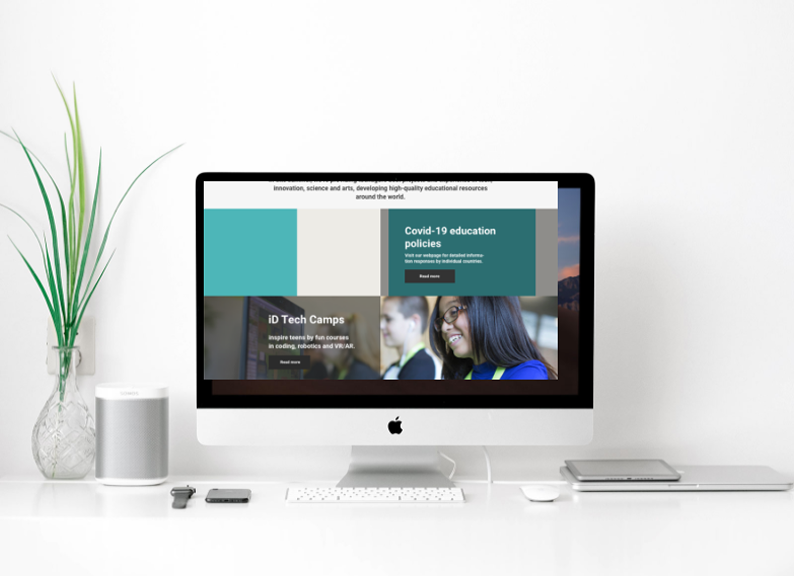
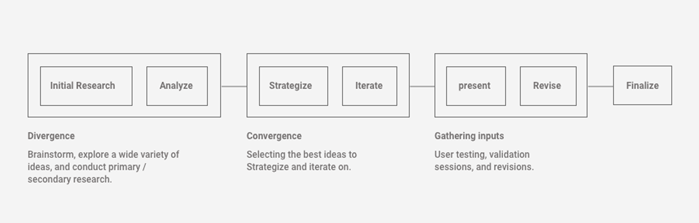
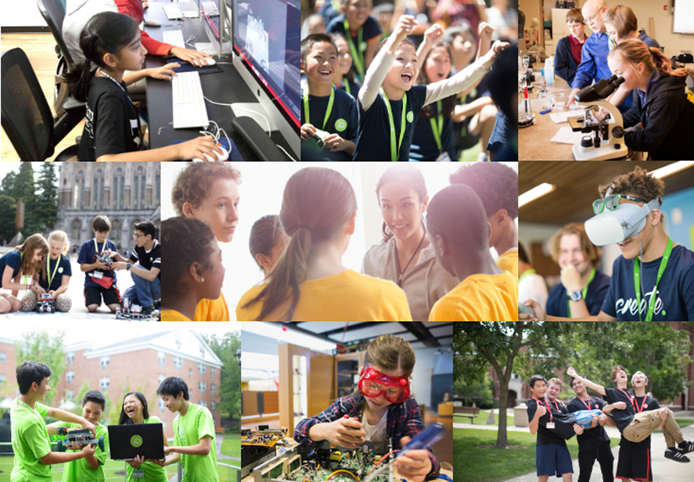
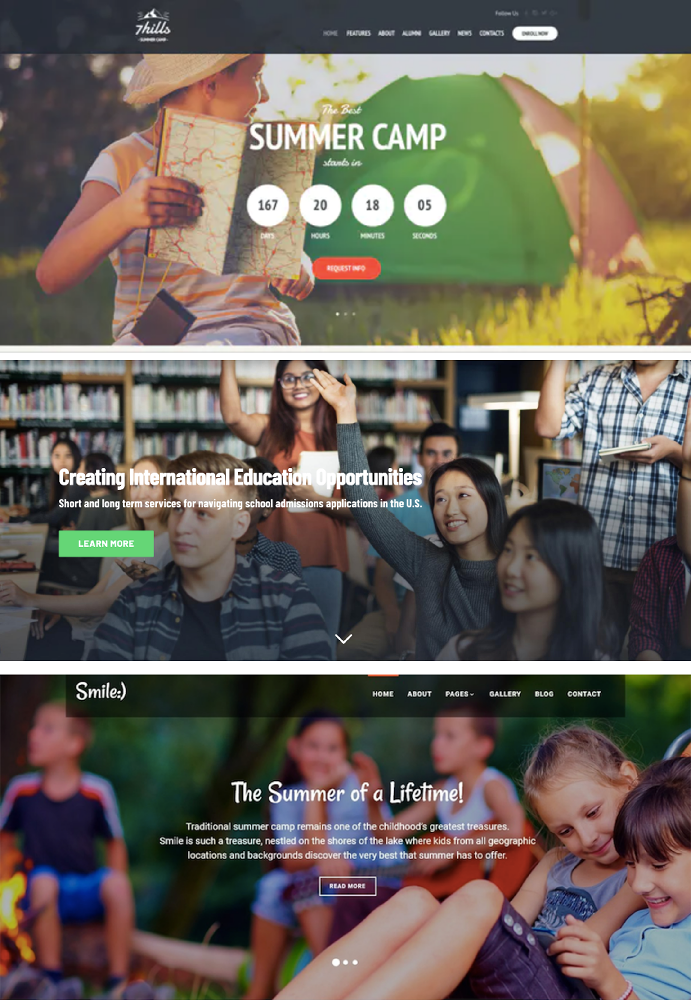
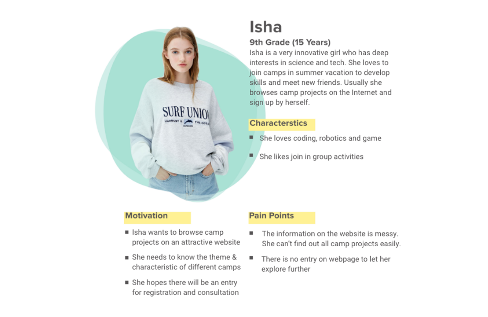
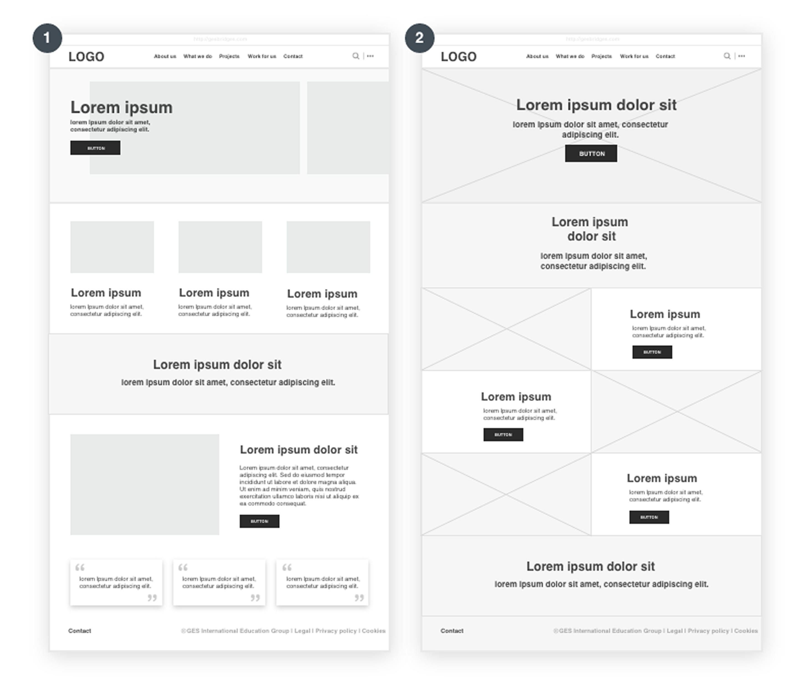
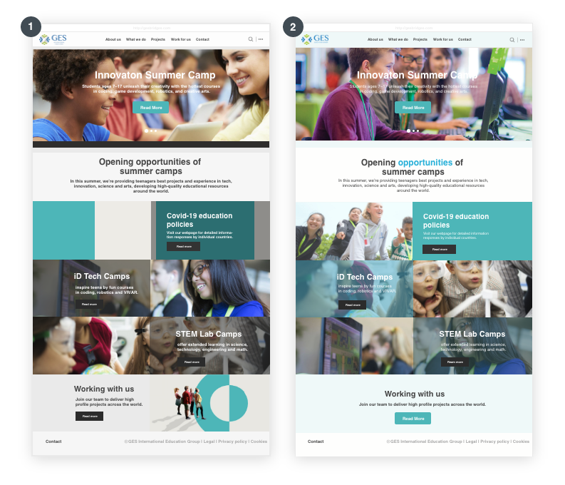
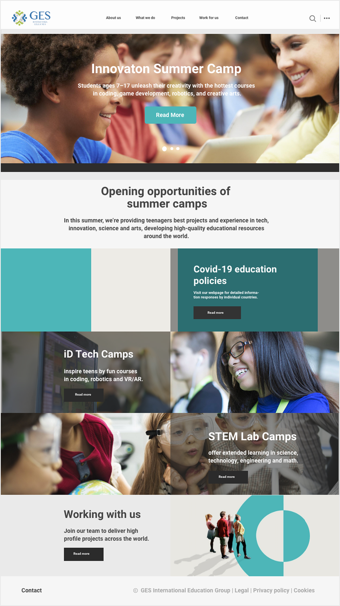
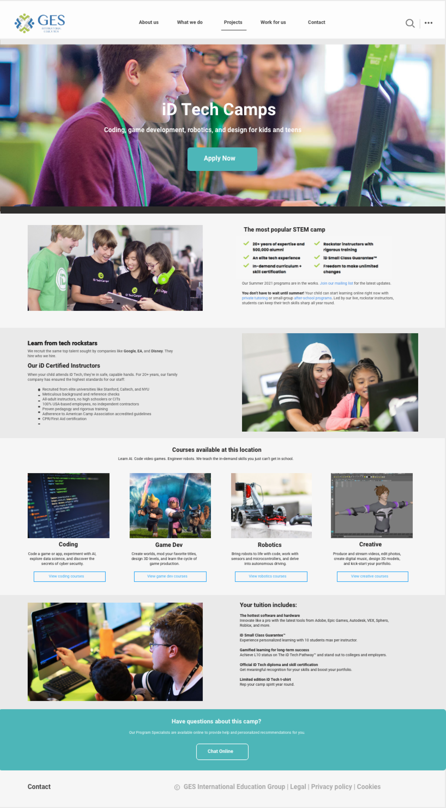

GES Website
Redesigning GES official website to improve the UX side of the website for increasing its leads and conversions.

Team
1 Designers, 1 Project Manager, 2 Developers
Tools
Sketch, Axure, Whimsical
Tags
Web Application, UI/UX, Wirefrmaing
Timeline
Full Time - 1 month
INTRODUCTION
Project Overview
GES’s official website redesign is one of the major projects I did in GES International Education Group. It is a comprehensive education company founded in Silicon Valley of United States. GES aims to inspire teenagers’ innovative potential and lead them to a global dual-track (online and offline) community of innovative learning through developing different innovative technology camps and projects. So far, it has served more than 31,000 teenagers around the world.
As leading designer of the official website redesign project, my work focuses on improve its usability and UX design, upgrade its visual look, manage published content and improve its conversion rate. I'm also responsible for the platform maintaining and continuously optimizing.
HOW IT BEGINS
Problem Statement
Through talks with key stakeholders, I decided to focus on improving the UX side of the website and potentially increasing its leads and conversions.
Our main goals were:
- Make it attractive and easy to use for every potential user.
- QR/Barcode Scanner Integration
- Increase its leads and conversions.
The Challenge
How might we improve the UX side of the website conforming to the company's brand image as well as potentially increase the website’s leads and conversions?
The Design Process

GES Brand Identity
We began our initial research by spending most of our time getting familiar with GES brand identity and vision. The Stakeholders believe that the official website is an important channel to display the company’s image. Therefore, understanding the company’s vision was important.
To summarize our understanding, we created key words that surround the brand:
- Innovation
- Education
- Vitality
- Dream

Analysis
While analyzing the different brands that successfully spoke to their brand identity, I was able to find different patterns and trends that could be leading the success of those companies.
- Strong brand imagery
- Hero banners are 80% imagery, 20% text
- UX writing follows brand visions
- 1-2 primary/secondary CTAs available

User Persona
After defining the major goals, I collaborated with a team of four and conducted research on our user and target audience. Based on the data we get, I developed a primary persona, which demonstrates our target users, their goals and their frustrations.

Wireframe
Our first round of iterations focused on exploring different structural approaches for the homepage layout. We created two low-fidelity wireframe concepts to test how content hierarchy, imagery, and calls-to-action could guide users through the page.
Concept 1 follows a more traditional modular layout. The hero section introduces the page with a headline, short description, and primary CTA. Below it, content is organized into structured blocks, including a row of featured items, a highlighted information section, and supporting content such as testimonials. This layout emphasizes clarity and easy scanning by separating information into clearly defined sections.
Concept 2 explores a more visually driven layout. The hero section uses a full-width image with centrally aligned text and CTA to create a stronger first impression. The following sections present content in a grid-based format that alternates between imagery and text blocks. This approach creates a more dynamic visual rhythm and highlights individual pieces of content while maintaining a clear navigation flow.

Exploration Feedbacks
"Concept 2 feels more intuitive than Concept 1. The full-width hero section with centered text creates a stronger visual focus and immediately draws attention to the key message."
"Concept 2 is closer to what we’re aiming for. The headline and button placed in the center make the call-to-action easier to notice compared to the left-aligned layout in Concept 1."
"The grid layout in Concept 2 also provides more flexibility for showcasing imagery and featured content, making it more scalable for future updates."
Iterations
Following the wireframe exploration, I developed two high-fidelity prototypes to evaluate how different layout structures and visual hierarchies influence user engagement and brand identity.
Concept 1 adopts a modular, grid-based layout that prioritizes structural clarity. By integrating program sections into card-based blocks with teal color panels and text overlays, it creates strong visual anchors across the page. This approach effectively reinforces the organization’s visual identity through the strategic use of brand colors, ensuring that information is organized into distinct, high-impact sections. It is designed for users who value a professional, scannable overview of all program offerings.
Concept 2 explores a more fluid, staggered layout that moves away from the rigid grid of Concept 1. By placing text and images side-by-side in a Z-pattern, it creates a rhythmic scrolling experience that feels more modern and engaging. The use of rounded corners and generous white space gives the page a friendlier, more approachable aesthetic. While this design highlights individual program stories through clear photography, it trades off the bold brand-color blocks of Concept 1 for a more minimalist and airy presentation.

Iteration Feedbacks
These concepts were presented to the client, project manager, and brand director.
“Concept 1 presents the programs more clearly. The modular layout effectively categorizes the content, making it much easier for users to scan and distinguish offerings.”
“The stronger integration of the brand color in Concept 1 creates superior visual anchors and reinforces our identity across the entire page.”
“Concept 2 feels more modern and dynamic; the staggered Z-pattern and rounded imagery create a rhythmic visual flow that makes the content feel more approachable.”
“However, Concept 1 strikes a more professional balance between brand-driven structure and information density, which better serves our diverse program categories.”
FINAL OUTPUT
Homepage
The final main page design conforms to the GES brand image, and the homepage banner image shows the concept of "education, innovation, vitality, and dream" in the GES brand culture. The full bleed picture with minimal content has a strong visual impact and attractiveness, which is more aesthetical and can catch the user's attention at once. From content perspective, the content includes primary headline, secondary headline and CTA button, which can play the role of increasing the website’s leads and conversions.

Project Page
The final project page displays all product information (project introduction, courses, fees, etc.). The narrative of the page is structured according to the content, so that users can understand the project information more intuitively. The structured approach streamlines the viewers understanding the project and also the company.
In addition, the project page contains CTA buttons. The button to sign up for this project on the top, the button to browse course details in the middle and the button to consult for more project-related information on the bottom can guide the viewer to operate further, which effectively increases the website’s leads and conversions.

Final Thoughts⚡
This project was the first web design project that I participated. I was able to dive deep into the UX strategy behind many of our decisions learned about what worked and what didn’t based off of the feedback.
The feedback rounds and reviews were extremely helpful as they were able to show me different perspectives and solutions towards the same problem. This broadened my way of thinking.
Working for an already established brand was difficult because of the strong vision already had. While integrating our solutions we also had to be constantly thinking about the brand. This definitely challenged us to think about the business holistically and not just on the user flow itself.
Metrics 👀
Currently looking into the data of this new designs. Please come back to this case study at a later date to view!
Thanks for Reading ❤️
If you’d like to hear more about my experience, feel free to send me an email–I’d love to chat ☕.
My Other Projects
If you'd like to see more, check out my other projects below!